Parametric Pattern Design

Parametric Pattern Design
Explore variations and enjoy the subtle differences.
This was an experimental project I explored during my spare time at work, using Rhino Grasshopper to study parametric hole design and surface transformations. This technique can be directly applied to future design needs, enhancing both innovation and feasibility.
Due to the cooling requirements of routers, a large number of ventilation holes need to be designed within a limited space, making hole pattern optimization a key challenge.
To balance functionality and aesthetics, I proactively introduced a gradient-based parametric design, allowing for greater flexibility in hole arrangements while adding depth and intricate details to the product.
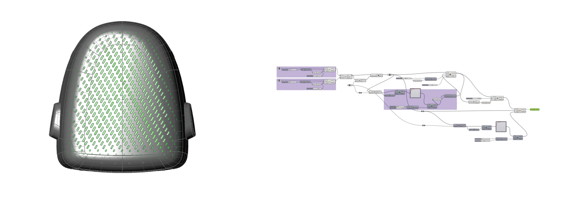
Pattern studies for ventilation, texture, and surface expression.
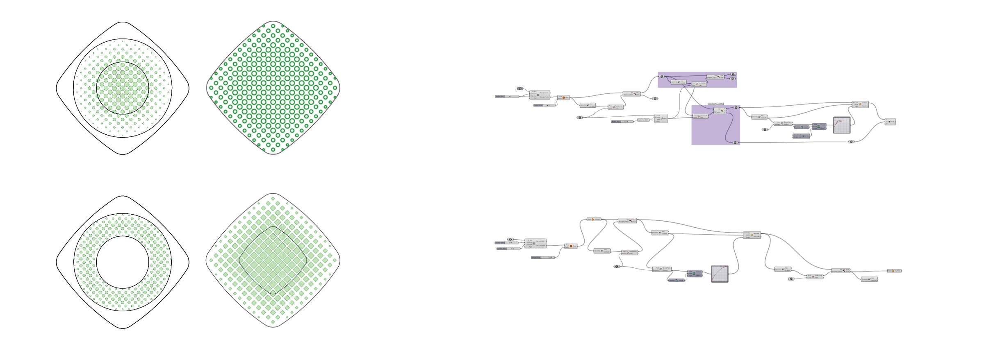
Customized Holes + Gradient + Position Distinction
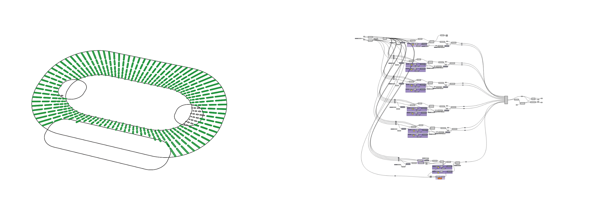
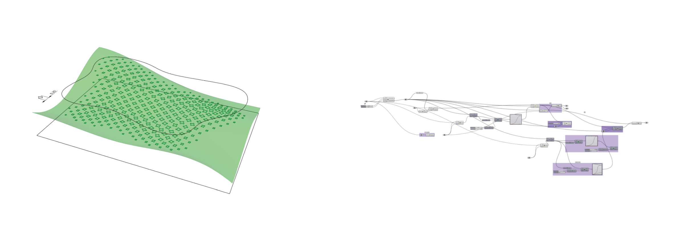
Custom Hole + Gradient + Projection Surface + Rotation
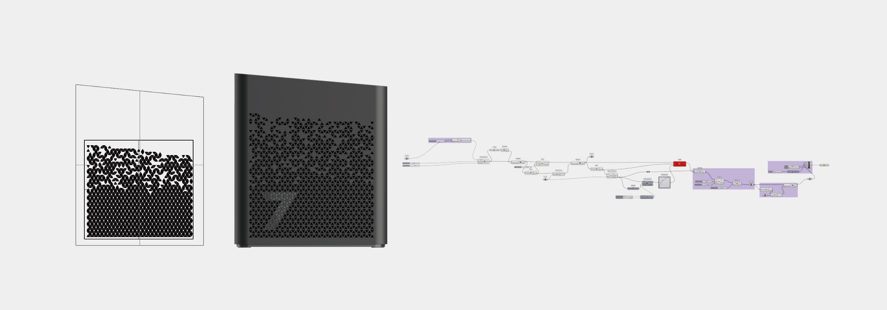
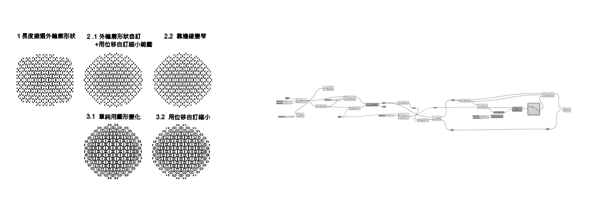
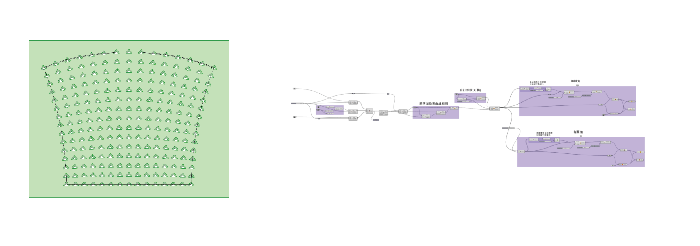
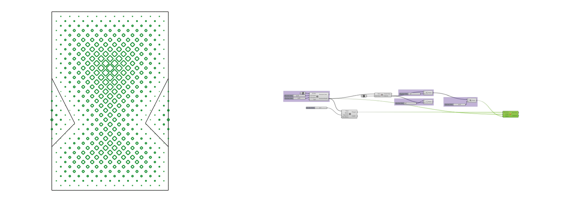
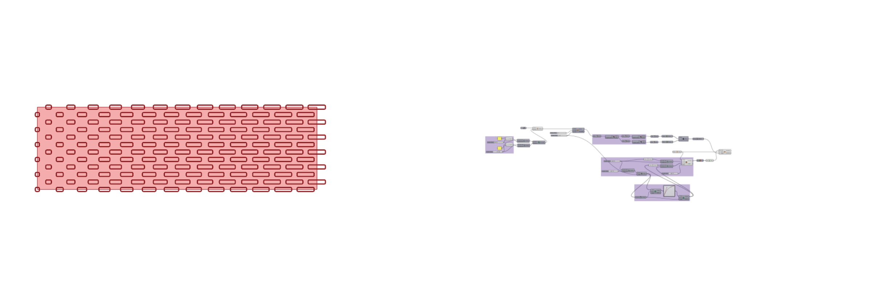
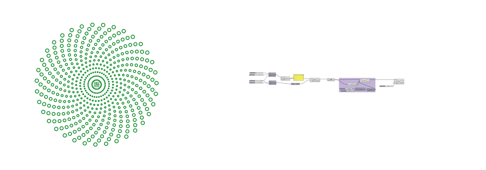
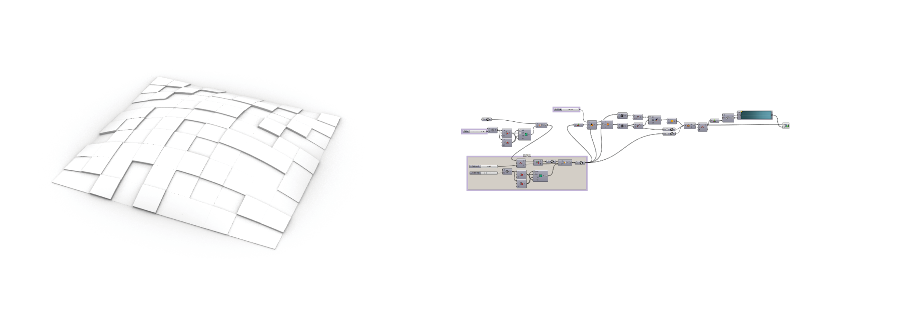
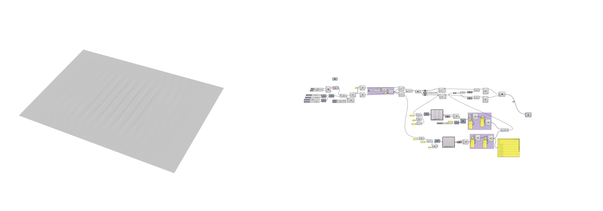
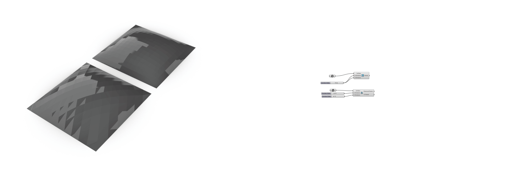
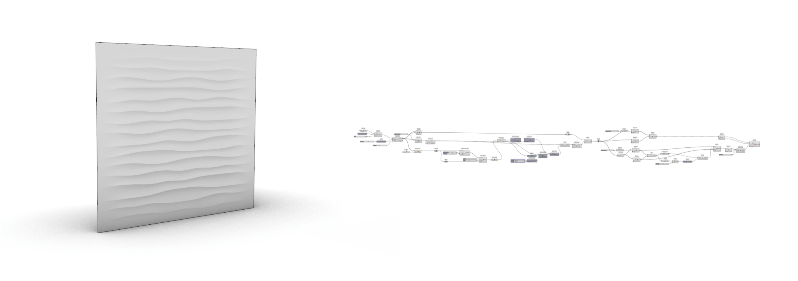
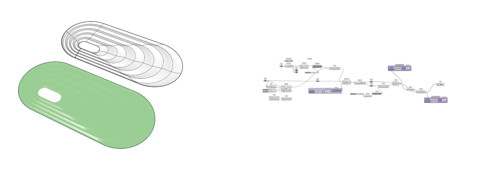
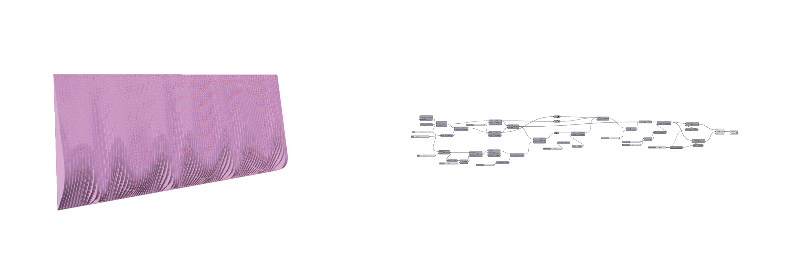
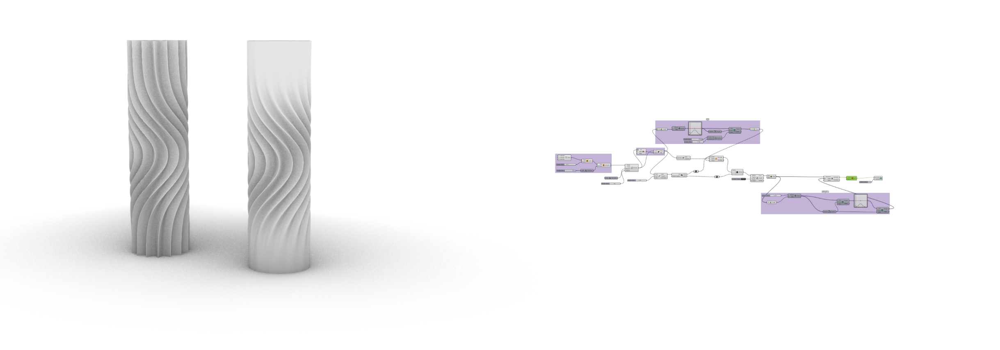
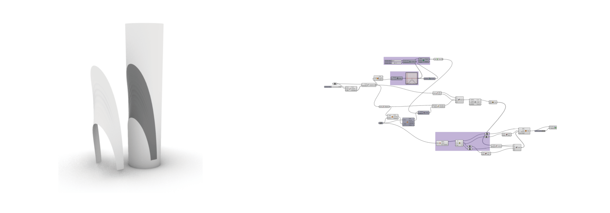
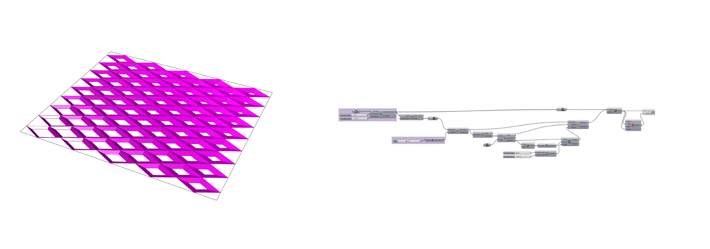
3D Diamond Surface + Gradual Fade Perforation
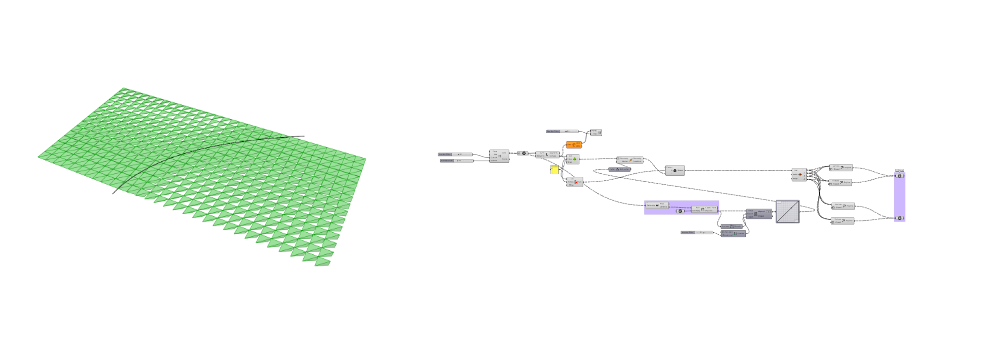
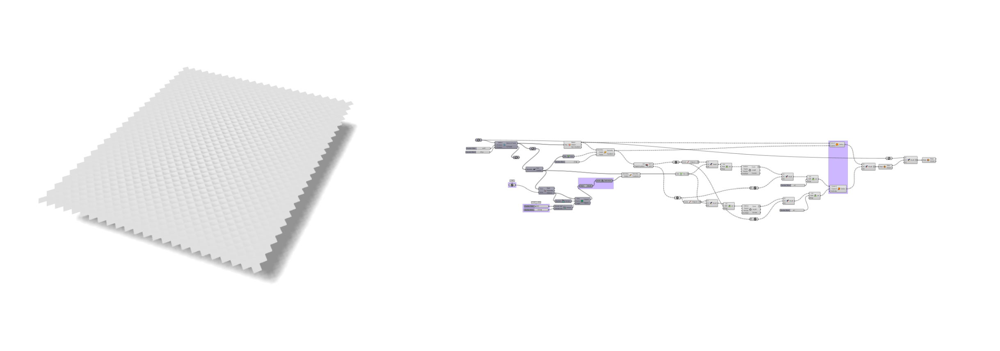